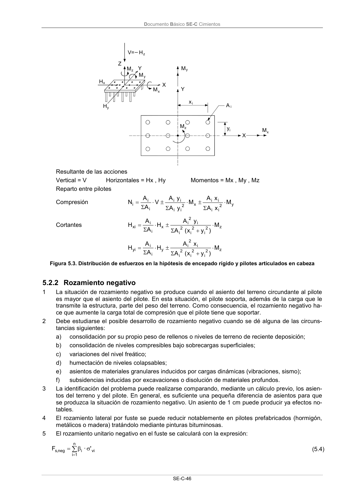

DB-SE-C Cimientos · edición 2019-12-20 · capa oficial
Documento DB-SE-C-oficial · SHA-256 del PDF a71133f4b0dca253e45ea3071c70f2a512354bcc5cd841bf89b1a502f567ac5e
Copia fiel del PDF fuente · Fuente oficial
Ficha de la disposición en la fuente oficial
Formatos: JSON del segmento · Markdown
5.2.2 Rozamiento negativo 1 La situación de rozamiento negativo se produce cuando el asiento del terreno circundante al pilote es mayor que el asiento del pilote. En esta situación, el pilote soporta, además de la carga que le transmite la estructura, parte del peso del terreno. Como consecuencia, el rozamiento negativo ha- ce que aumente la carga total de compresión que el pilote tiene que soportar. 2 Debe estudiarse el posible desarrollo de rozamiento negativo cuando se dé alguna de las circuns- tancias siguientes: a) consolidación por su propio peso de rellenos o niveles de terreno de reciente deposición; b) consolidación de niveles compresibles bajo sobrecargas superficiales; c) variaciones del nivel freático; d) humectación de niveles colapsables; e) asientos de materiales granulares inducidos por cargas dinámicas (vibraciones, sismo); f) subsidencias inducidas por excavaciones o disolución de materiales profundos. 3 La identificación del problema puede realizarse comparando, mediante un cálculo previo, los asien- tos del terreno y del pilote. En general, es suficiente una pequeña diferencia de asientos para que se produzca la situación de rozamiento negativo. Un asiento de 1 cm puede producir ya efectos no- tables. 4 El rozamiento lateral por fuste se puede reducir notablemente en pilotes prefabricados (hormigón, metálicos o madera) tratándolo mediante pinturas bituminosas. 5 El rozamiento unitario negativo en el fuste se calculará con la expresión: vi n 1 i i neg ,s ' · F (5.4) Documento Básico SE-C Cimientos SE-C-47 siendo i cada una de las unidades geotécnicas consideradas a lo largo del pilote; 0,25 en arcillas y limos blandos; 0,1 en arenas flojas y 0,8 en arenas densas; ’vi la tensión efectiva en el punto del fuste considerado. 6 Cuando el rozamiento negativo no se desarrolle en su totalidad a lo largo del fuste, podrán em- plearse métodos de cálculo que consideren deformaciones relativas entre el suelo y el pilote para cuantificar la profundidad hasta la que se produce. 7 Los pilotes exteriores de los grupos de pilotes deben considerarse sometidos al mismo rozamiento negativo que si estuviesen aislados, especialmente los situados en las esquinas.
